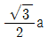
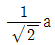
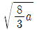
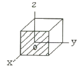
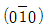
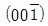
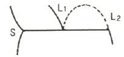

금속재료산업기사 (2012-09-15 기출문제)
1과목: 금속재료
1. 다음 중 실루민(silumin) 합금이란?
- Ag - Sn 계
- Cu - Fe 계
- Mn - Mg 계
- Al - Si 계
(정답률: 97%)

2. 비중이 약 4.5, 융점이 약 1668℃이며, 열 및 도전율이 낮은 특성을 갖는 금속은?
- Fe
- Ti
- Cu
- Al
(정답률: 88%)
3. 섬유강화 금속의 종류가 아닌 것은?
- PSM
- FRS
- MMC
- FRM
(정답률: 50%)
4. 다음 중 백동에 관한 설명으로 틀린 것은?
- Cu 에 Ni 이 10~30% 첨가된 합금이다.
- 가공성이 좋아 두께 25㎜에서 1㎜까지 중간풀림하지 않고 압연할 수 있다.
- 깊은 가공에 적합하고, 열간가공성도 좋으며 내식성 등이 우수하여 화폐, 열교환기 등에 사용된다.
- 내식성도 좋으므로, 줄자, 표준자, 시계의 추, 바이메탈 등에 사용된다.
(정답률: 69%)
5. 주로 열간 금형용 합금공구강 재료로 사용되는 강종이 아닌 것은?
- STD 4종
- STD 5종
- STD 11종
- STD 61종
(정답률: 69%)
6. 40~50% Ni-Cu 합금으로 전기 저항이 크고 온도계수가 낮아 전기 저항 재료로 쓰이며 열전대선으로도 사용되는 것은?
- 문쯔메탈(Muntz metal)
- 모넬메탈(Monel metal)
- 콘스탄탄(Constantan)
- 플래티나이트(Platinite)
(정답률: 69%)
7. 어떤 금속의 길이가 10℃에서 10㎜인 봉을 15℃로 올렸을 때 10.0013㎜로 팽창했다면 이 금속의 선팽창계수는?
- 23 × 10-6
- 23.9 × 10-6
- 26 × 10-6
- 29.9 × 10-6
(정답률: 57%)
8. 다음 중 수소저장용 합금의 기능이 아닌 것은?
- 촉매작용
- 금속 미분말의 제조
- 구조용 복합재료로 사용
- 열에너지의 저장 및 수송
(정답률: 43%)
9. 베어링합금이 구비해야 할 조건이 아닌 것은?
- 주조성이 좋아야 한다.
- 피로강도가 높아야 한다.
- 내부식성이 높아야 한다.
- 소착에 대한 저항력이 낮아야 한다.
(정답률: 87%)
10. 하드필드강(hadfield steel)의 특징을 설명한 것 중 틀린 것은?
- 고 마그네슘 강이라 불리운다.
- 내마멸성 및 내충격성이 우수하다.
- 상온에서 오스테나이트 조직을 갖는다.
- 단조나 압연보다는 주조하여 만들어진다.
(정답률: 68%)
11. 스테인리스강에 대한 설명 중 틀린 것은?
- 강의 내식성은 Fe합금 또는 Fe-Ni합금에 함유하는 Si의 양에 따라 좌우된다.
- Cr 은 Cr2O3라는 산화피막을 형성하여 내부를 부식으로부터 보호한다.
- 스테인리스강은 페라이트계, 마텐자이트계, 오스테나이트계 및 석출경화형으로 나뉘어진다.
- 오스테나이트계 스테인리스강은 질산염, 크롬산염 등의 부동태화제를 첨가하여 공식을 방지한다.
(정답률: 67%)
12. 비중이 4.5 정도로 가벼우며, 내식성 및 450℃까지의 고온에서 강도/중량비가 높아 항공기 엔진 주위의 기체재료, 제트엔진의 압축기 부품재료 등으로 사용되는 합금은?
- 아연합금
- 니켈합금
- 망간합금
- 티타늄합금
(정답률: 80%)
13. 0.8%C의 공석강 변태점은?
- A0
- A1
- A2
- A3
(정답률: 71%)
14. 상온에서 체심입방격자로만 된 것은?
- Ag, Al, Au
- Cu, Fe, Ba
- Mo, Fe, Li
- Be, Cd, Mg
(정답률: 51%)
15. 규소강판에 요구되는 특성을 설명한 것 중 옳은 것은?
- 철손이 적어야 한다.
- 자화에 의한 치수 변화가 많아야 한다.
- 사용 중에 자기적 성질의 변화가 커야 한다.
- 박판을 적층하여 사용할 때 층간저항이 낮아야 한다.
(정답률: 63%)
16. 주철의 일반적 특성을 설명한 것 중 틀린 것은?
- 가단주철은 고탄소 주철에 해당된다.
- 구상흑연주철은 마그네슘을 회주철 용융금속에 첨가하여 만든다.
- 회주철은 파면이 회색으로 주조성과 절삭성이 우수하여 주물용으로 사용된다.
- 백주철은 C, Si분이 많고 Mn분이 적어 C가 흑연상태로 유리되어 파면이 흰색이다.
(정답률: 57%)
17. 다음 중 강괴의 종류가 아닌 것은?
- 림드강
- 킬드강
- 세미 림드강
- 세미 킬드강
(정답률: 80%)
18. 금속을 상온에서 압연이나 딥드로잉(deep drawing)과 같은 소성 변형한 후 비교적 낮은 온도에서 가열하면 강도가 증가하고 연성이 감소하는 이러한 현상을 무엇이라고 하는가?
- 확산현상
- 변형시효 현상
- 가공경화 현상
- 질량효과 현상
(정답률: 58%)
19. 탄소강에서 탄소량 증가에 따라 감소하는 것은?
- 비열
- 강도
- 열전도도
- 전기저항
(정답률: 61%)
20. Cu-Pb계 베어링으로 화이트메탈보다 내하중성이 크므로 고속 고하중용 베어링으로 적합한 것은?
- 켈밋(Kelmet)
- 자마크(Zamak)
- 오일라이트(Oillite)
- 베비트 메탈(Babbit metal)
(정답률: 81%)
2과목: 금속조직
21. 격자상수가 a 인 체심입방격자에서 최근접원자간 거리는?
- a



(정답률: 81%)
22. 열분석 시험에서 열분석을 할 수 있는 3가지 방법에 해당되지 않는 것은?
- 냉각곡선을 측정하는 방법
- 시차곡선을 측정하는 방법
- 응력곡선을 측정하는 방법
- 비열곡선을 측정하는 방법
(정답률: 54%)
23. 금속의 응고 과정에 대한 설명으로 틀린 것은?
- 순금속이 응고하면 결정립들은 안쪽에서 바깥쪽으로 성장한다.
- 용융금속이 응고하면 용기의 벽쪽에서부터 내부로 칠층, 주상정, 입상정으로 성장한다.
- 용융금속 중에서 용기의 벽에 접촉되어 있던 금속이 급속히 냉각되어 응고 이하의 온도로 심하게 과냉 된다.
- 용융금속 속에 있는 열은 용기의 벽을 통하여 외부로 계속 방출되므로 용기의 용융금속의 온도는 용기 벽에서 가장 낮고 내부로 들어갈수록 높아진다.
(정답률: 72%)
24. 규칙-불규칙변태에서 장범위규칙도가 0 일 때의 상태는?
- 단범위 규칙상태
- 완전 규칙상태
- 완전 불규칙상태
- 장범위 규칙상태
(정답률: 67%)
25. 면심입방격자에 속하는 Al, Cu, Au 및 Ag 등 금속의 슬립(slip)면은?
- (101)
- (111)
- (110)
- (011)
(정답률: 82%)
26. 물질 중에서 원자가 열적으로 활성화되어 이동하게 되는 현상을 확신이라 하는데 이 때 이동하는 원자의 확산 경로에 의한 분류에 속하는 것은?
- 격자확산
- 자기확산
- 상호확산
- 불순물확산
(정답률: 61%)
27. 결정체의 결함을 크기에 따라 분류할 때 점결함에 해당되지 않는 것은?
- 전위
- 격자간원자
- 원자공공
- 불순물원자
(정답률: 79%)
28. 입장격자에서 빗금친면과 등가면이 아닌 것은?

- (010)


- (110)
(정답률: 67%)
29. 평형상태도에서 농도에 관한 설명으로 옳은 것은?
- 증기압 곡선을 의미한다.
- 0.2%에 해당하는 응력을 의미한다.
- 균일하고 비연속적 경계를 의미한다.
- 1계에서 성분 서로간의 관계 분량을 의미한다.
(정답률: 61%)
30. 다음 중 고용체강화에 대한 설명으로 틀린 것은?
- 일반적으로 용매원자의 격자에 용질원자가 고용되면 순금속보다 강한 합금이 되는 것이 고용체강화이다.
- 용매원자와 용질원자 사이의 원자 크기의 차이가 적을수록 강화효과는 커진다.
- 용질원자에 의한 응력장과 가동 전위의 응력장이 상호작용을 하여 재료를 강화하는 방법이다.
- Cu-Ni합금에서 구리의 강도는 60%Ni이 첨가될 때까지 증가되는 반면 니켈은 40%Cu가 첨가될 때 고용체강화가 된다.
(정답률: 57%)
31. A+B+C+D의 4원 합금이 200℃에서 존재할 때, β+γ상 조직이 관찰된다면 이때 응축계의 자유도는?
- 0
- 1
- 2
- 3
(정답률: 53%)
32. G.P 집합체(Guinier-Preston aggregate)와 관계가 가장 깊은 경화는?
- 전위경화
- 고용경화
- 가공경화
- 석출경화
(정답률: 57%)
33. 강에서 베이나이트(Bainite)에 관한 설명으로 옳은 것은?
- 베이나이트는 오스테나이트와 시멘타이트의 혼합물이다.
- 고온에서 베이나이트는 침상 또는 래스(lath) 형태의 페라이트와 래스사이에 석출되는 시멘타이트로 된다.
- 약 350℃의 온도에서 베이나이트의 조직은 판상에서 래스모양으로 변하고 탄화물의 분산은 조대해진다.
- 상부 베이나이트와 하부 베이나이트는 서로 같은 방법으로 생성한다.
(정답률: 48%)
34. 냉간가공의 금속에서 축적에너지의 크기에 영향을 주는 인자가 아닌 것은?
- 가공도
- 합금원소
- 가공시간
- 결정입도
(정답률: 48%)
35. 금속을 가공하면 변형 에너지가 발생한다. 이 변형에너지가 집적되기 쉬운 곳이 아닌 것은?
- 기공
- 전위
- 격자간 원자
- 공격자점(공공)
(정답률: 55%)
36. 금속재료에서 전기저항과 가장 관련이 없는 것은?
- 공공(Vacancy)
- 전위(Dislocation)
- 결정립계(Grain boundary)
- 결정격자(crystal lattice)
(정답률: 49%)
37. 상의 계면(interface)에 대한 설명 중 옳은 것은?
- 계면에너지가 작은 면의 성장속도는 빠르다.
- 원자간 결합에너지가 클수록 계면에너지는 작다.
- 정합 계면을 가진 석출물은 성장하면서 정합성을 상실하지 않는다.
- 두 상의 결정구조, 조성 또는 방위가 다른 경우도 계면에서 두 상 사이에 변형을 일으키지 않는 원자 대응이 이루어지더라도 정합계면을 이룬다.
(정답률: 45%)
38. 2성분계에서 나타나는 3개의 상으로 된 불변반응을 나타낸 그림으로 반응식은 L1(융액) ⇄ L2(융액) +S(고상)으로 표현된다. 이때의 반응으로 옳은 것은?

- 공정반응
- 포정반응
- 편정반응
- 공석반응
(정답률: 56%)
39. 다음 규칙-불규칙 변태에서 규칙 격자가 생길 때의 성질 변화에 대한 설명으로 옳은 것은?
- 연성 감소
- 경도 감소
- 강도 감소
- 전기전도도 감소
(정답률: 60%)
40. 고체상태에서 확산속도가 작아서 균등하게 확산하지 못하고 결정립 내에서 부분적으로 불평형이 생겨 수지상정으로 나타나는 현상은?
- 주상조직
- 입내편석
- 입계편석
- 유심조직
(정답률: 61%)
3과목: 금속열처리
41. 다음 중 표면 경화 열처리에 해당되는 것은?
- 청화법
- 담금질
- 오스템퍼링
- 노멀라이징
(정답률: 50%)
42. 고속도공구강인 SKH 2 강을 경도 HRC 63 이상을 얻고자 할 때의 담금질 온도로 옳은 것은?
- 780 ~ 850℃
- 850 ~ 950℃
- 1000 ~ 1⑤0℃
- 1250 ~ 1290℃
(정답률: 57%)
43. 질화처리로 최표면에 나타나는 화합물층(compound layer)에 존재하는 γ′ 상의 구성성분은?
- FeN
- Fe2N
- Fe4N
- Fe8N
(정답률: 63%)
44. SM45C의 화염 담금질 경도(HRC)는 얼마인가?
- 45
- 50
- 55
- 60
(정답률: 63%)
45. 강을 항온변태 시켰을 때 나타는 것으로 마텐자이트와 투루스타이트의 중간 조직은?
- 베이나이트(bainite)
- 페라이트(ferrite)
- 오스테나이트(austenite)
- 시멘타이트(cementite)
(정답률: 74%)
46. 다음 열처리 조직 중 경도가 큰 순서로 배열된 것은?
- 마텐자이트 ＞ 투루스타이트 ＞ 소르바이트 ＞ 시멘타이트 ＞ 펄라이트
- 시멘타이트 ＞ 마텐자이트 ＞ 투루스타이트 ＞ 소르바이트 ＞ 펄라이트
- 투루스타이트 ＞ 마텐자이트 ＞ 소르바이트 ＞ 시멘타이트 ＞ 펄라이트
- 소르바이트 ＞ 마텐자이트 ＞ 투루스타이트 ＞ 시멘타이트 ＞ 펄라이트
(정답률: 71%)
47. 아공석강을 노말라이징(normalizing) 열처리 하였을 경우 얻어지는 조직은?
- 소르바이트 + 시멘타이트
- 시멘타이트 + 오스테나이트
- 시멘타이트 + 베이나이트
- 페라이트 + 펄라이트
(정답률: 78%)
48. 강의 열처리시 담금질성을 향상시키는 원소로 가장 적합한 것은?
- Mn
- Pb
- S
- Cu
(정답률: 78%)
49. 뜨임 취성을 방지하는데 가장 효과적인 첨가원소는?
- Mn
- Cr
- Ni
- Mo
(정답률: 61%)
50. 강의 항온변태 곡선인 S곡선의 형태에 영향을 주는 요소가 아닌 것은?
- 첨가 원소
- 응력의 영향
- 최고 가열온도
- 조직학적 방법
(정답률: 65%)
51. 단조용 알루미늄 합금 중 초 둘랄루민의 담금질 온도는?
- 5⑤~510℃
- 300~400℃
- 235~310℃
- 150~200℃
(정답률: 49%)
52. 열처리 방법, 재질 및 형상에 따라서 냉각방법이 달라지는데 작동방법에 따른 냉각장치에 해당되지 않는 것은?
- 공냉 장치
- 분무 냉각 장치
- 강제 환류 장치
- 프레스 냉각 장치
(정답률: 56%)
53. 안정한 질별로 하기 위하여 추가 가공 경화의 유무에 관계없이 열처리 한 것을 의미하는 질별 기호로 옳은 것은?
- F
- 0
- T
- W
(정답률: 51%)
54. 재료를 오스테나이트화 한 후 코(nose) 구역을 통과하도록 급냉하고 시험편의 내 ㆍ 외가 동일 온도에 도달한 다음 적당한 방법으로 소성 가공을 하여 공랭, 유랭 또는 수냉으로 마텐자이트 변태를 일으키는 것은?
- 수인법
- 파텐팅
- 제어압연
- Ms 담금질
(정답률: 57%)
55. 초심랭처리의 효과로 틀린 것은?
- 잔류응력이 증가한다.
- 내마멸성이 현저히 향상된다.
- 조직의 미세화와 미세 탄화물의 석출이 이루어진다.
- 잔류 오스테나이트가 대부분 마텐자이트로 변태한다.
(정답률: 78%)
56. 열처리 공정 검사에 필요한 장비가 아닌 것은?
- 비커스 경도계
- 금속 현미경
- 로크웰 경도계
- 도금 두께 측정기
(정답률: 68%)
57. Ac3 또는 Ac1점 이상 약 30~50℃의 온도로 가열한 후, 노 내에서 서냉하는 열처리 조작법은?
- 완전 풀림
- 연화 풀림
- 항온 풀림
- 응력 제거 풀림
(정답률: 51%)
58. 흑심가단주철의 열처리 중 제1단 흑연화에서 일어나는 반응식으로 옳은 것은?
- CaCO3 → CO2 + CaO
- Fe3C → 3Fe + C
- C + O2 → CO2
- 3Fe + CO2 → Fe3C + O2
(정답률: 73%)
59. 담금질용 열처리 냉각 탱크(Tank)에 냉각시 냉각속도가 가장 빠른 냉매는?
- 오일
- 노냉
- 공기
- 액체 질소
(정답률: 72%)
60. 진공로 내부에 단열하는 단열재의 구비조건으로 틀린 것은?
- 열용량이 적어야 한다.
- 흡습성이 커야 한다.
- 열적 충격에 강하여야 한다.
- 방사열을 완전히 반사시키는 재료이어야 한다.
(정답률: 60%)
4과목: 재료시험
61. 항절시험은 어떤 시험에 해당하는가?
- 인장시험
- 충격시험
- 전단시험
- 굽힘시험
(정답률: 52%)
62. 크리프 시험실의 환경조건으로서 가장 먼저 고려해야 하는 것은?
- 항온항습
- 공기통풍
- 진동내진
- 분진방지
(정답률: 72%)
63. 기계나 기구의 설계시 재료의 안전성을 나타내는 안전율의 고려사항이 아닌 것은?
- 최대 설계 응력
- 최대 사용 하중
- 재료의 손실 하중
- 재료의 파괴 하중
(정답률: 67%)
64. 현미경을 이용한 조직 검사 절차로 옳은 것은?
- 미세연마 → 거친연마 → 부식 → 검경
- 미세연마 → 거친연마 → 검경 → 부식
- 거친연마 → 미세연마 → 부식 → 검경
- 거친연마 → 미세연마 → 검경 → 부식
(정답률: 75%)
65. 육안검사(Macro)는 조직 및 불순물을 육안 또는 몇 배율 이내의 확대경으로 관찰하는가?
- 10배 이내
- 20배 이내
- 30배 이내
- 40배 이내
(정답률: 83%)
66. 순수한 인장 또는 압축으로 생긴 길이 방향의 단위 스트레인으로 옆쪽 스트레인(lateral strain)을 나눈값을 무엇이라 하는가?
- 횡탄성비
- 프아송비
- 전탄성비
- 단면수축비
(정답률: 80%)
67. 와전류 탐상시험의 특성을 설명한 것 중 틀린 것은?
- 자장이 발생하는 동일 주파수에서 진동한다.
- 전도체 내에서만 존재하며, 교번 전자기장에 의해서 발생한다.
- 코일에 가장 근접한 검사체의 표면에서 최대 와전류가 발생한다.
- 와전류가 물체에 침투되는 깊이는 시험주파수, 전도성, 투자율과 비례한다.
(정답률: 56%)
68. 결정입도 측정시 일정한 길이의 직선을 임의의 방향으로 긋고 직선과 결정립이 만나는 점의 수를 측정하여 직선 단위 길이당의 교차점 수로 표시하는 방법은?
- 제퍼리스법
- 헤인법
- 면적 측정법
- 표준 비교법
(정답률: 59%)
69. 브리넬 경도시험 결과 경도값이 HBS(10/3000/30)450로 표시되었을 때 ( )내에 표시된 3000의 의미는?
- 경도값
- 시험하중
- 하중시간
- 압입자의 직경
(정답률: 72%)
70. 충격 시험 전 사전 점검사항으로 최종 단계에 해당하는 것은?
- 해머 이동각도 지시계를 확인하고 0(zero)으로 조정
- 해머의 고정부와 축회전부의 조임 상태를 확인
- 시험편이 없는 상태에서 공시험으로 흡수에너지가 0(zero)인 것을 확인
- 해머 속도의 감속 및 정지 기능 확인을 위한 브레이크 부위 점검
(정답률: 67%)
71. 압축시험에 의해서 결정할 수 없는 재료의 성질은?
- 노치각도
- 항복점
- 탄성계수
- 비례한도
(정답률: 64%)
72. 충격시험편에서 노치의 영향에 대한 설명으로 옳은 것은?
- 노치의 반지름이 작을수록 응력집중이 작다.
- 노치의 반지름이 작을수록 흡수에너지가 크다.
- 노치의 깊이가 깊을수록 충격치는 증가한다.
- 노치 폭의 증가에 따라 흡수에너지가 반드시 증가하는 것은 아니다.
(정답률: 38%)
73. 강의 매크로조직 시험방법과 그 기호에 대한 설명으로 틀린 것은? (단, 스테인리스강과 내열강은 제외한다.)
- 피트는 표시기호를 M 으로 나타낸다.
- 잉곳 패턴은 표시기호를 I 로 나타낸다.
- 비교적 단면이 작은 탄소강이나 합금강은 염산법으로 시험한다.
- 비교적 단면이 큰 탄소강이나 합금강은 염화동암모늄법으로 시험한다.
(정답률: 52%)
74. 결함부와 이에 적합한 비파괴검사법의 연결이 틀린 것은?
- 용접내부의 기공 - 와전류탐상시험법
- 강재의 표면결함 - 자분탐상시험법
- 경금속의 표면결함 - 침투탐상시험법
- 단조품의 내부결함 - 초음파탐상시험법
(정답률: 73%)
75. 마모시험(wear test) 방법이 아닌 것은?
- 전단 마모
- 회전 마모
- 슬라이딩 마모
- 왕복슬라이딩 마모
(정답률: 67%)
76. 동(Cu), 황동, 청동 등의 부식제로 사용되는 것은?
- 염화제2철 용액
- 수산화나트륨 용액
- 피크린산 알코올 용액
- 질산 아세트산 용액
(정답률: 79%)
77. 다른 비파괴검사법과 비교하여 초음파탐상시험의 가장 큰 장점은?
- 표면 직하의 얕은 결함 검출이 쉽다.
- 재현성이 뛰어나며 기록보존이 용이하다.
- 침투력이 매우 높아 재료 내부 깊은 곳의 결함검출이 용이하다.
- 내부 불연속의 모양, 위치, 크기 및 방향을 정확히 측정할 수 있다.
(정답률: 64%)
78. 금속 ㆍ 원소에 대한 격자간 거리와 구조를 결정하기 위한 결정격자 측정법에 이용되는 시험은?
- 커핑 시험
- 에릭슨 시험
- X 선 회절 시험
- 자력 측정 시험
(정답률: 74%)
79. 침탄층이나 질화층 등 표면 경화층의 경도시험에 가장 적합한 시험은?
- 쇼어 경도
- 로크웰 경도
- 비커즈 경도
- 모스 경도
(정답률: 49%)
80. 강의 설퍼 프린트 시험에서 황의 분포 상황의 분류와 기호의 연결이 틀린 것은?
- 정편석 - SN
- 역편석 - SR
- 선상편석 - SL
- 중심부 편석 - SC
(정답률: 71%)